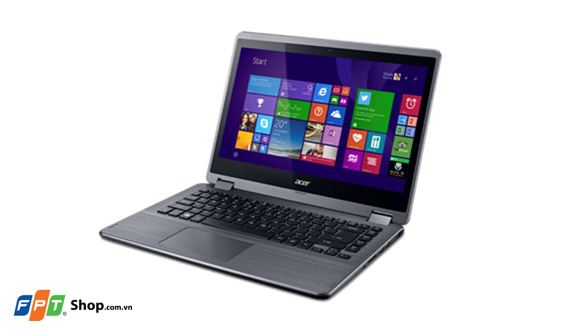
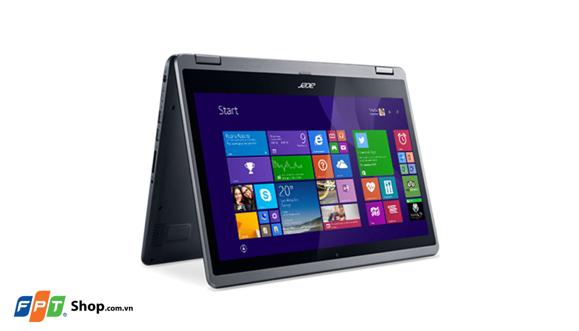
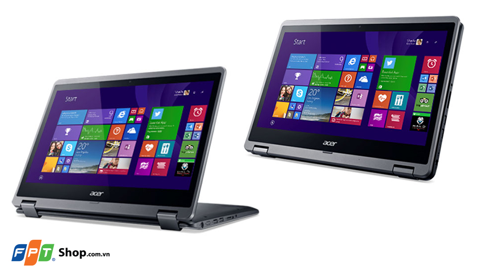
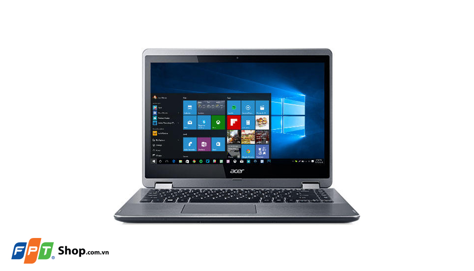

Laptop có màn hình cảm ứng xoay 360 độ, kiêm luôn máy tính bảng tiện lợi đang dần trở thành một xu thế khi mức giá đã ngày càng tốt hơn. Acer R3-471T không nằm ngoài xu hướng đó khi sở hữu một thiết kế hiện đại cùng cấu hình mạnh mẽ
Thiết kế đẹp và độc đáo với màn hình cảm ứng xoay
Acer R3-471T nổi bật với màn hình rộng 14 inch cảm ứng có thể lật xoay 360 độ, mang lại trải nghiệm như một chiếc laptop thông thường và cả một chiếc máy tính bảng khổ lớn. Thân máy thiết kế từ nhựa cao cấp với hai màu trắng hoặc xám sang trọng.
Cấu hình mạnh mẽ, dung lượng ổ lưu trữ lớn
Acer R3-471T có cấu hình mạnh mẽ với bộ xử lý Intel Core i3-5005U, dung lượng RAM 8GB, ổ cứng lưu trữ lên đến 1TB, card đồ họa tích hợp Intel HD Graphics 5500, tất cả hỗ trợ mang lại trải nghiệm mượt mà và mạnh mẽ. Máy cũng được cài đặt hệ điều hành Windows 10 với giao diện và nhiều ứng dụng tiện ích mới, đáp ứng được nhu cầu sử dụng của bạn.
Đầy đủ kết nối
Sở hữu tất cả các cổng kết nối cơ bản và tiên tiến nhất bao gồm cổng USB 2.0, cổng USB 3.0 tốc độ cao, jack cắm tai nghe 3.5mm, HDMI và một khe đọc thẻ nhớ. Kết nối LAN RJ 45, Wifi 802.11 b/g/n kết nối mạng. Máy không có ổ dĩa quang nhằm mục đích giảm bớt kích thước cũng như trọng lượng.
Bàn phím tiện lợi
Bàn phím có kích thước các phím lớn, hành trình phím đạt 1,7mm, cao hơn 20% so với các hãng khác, mang lại trải nghiệm đánh máy tốt, thao tác gõ nhanh chính xác, không bị hiện tượng nhầm và cấn phím.